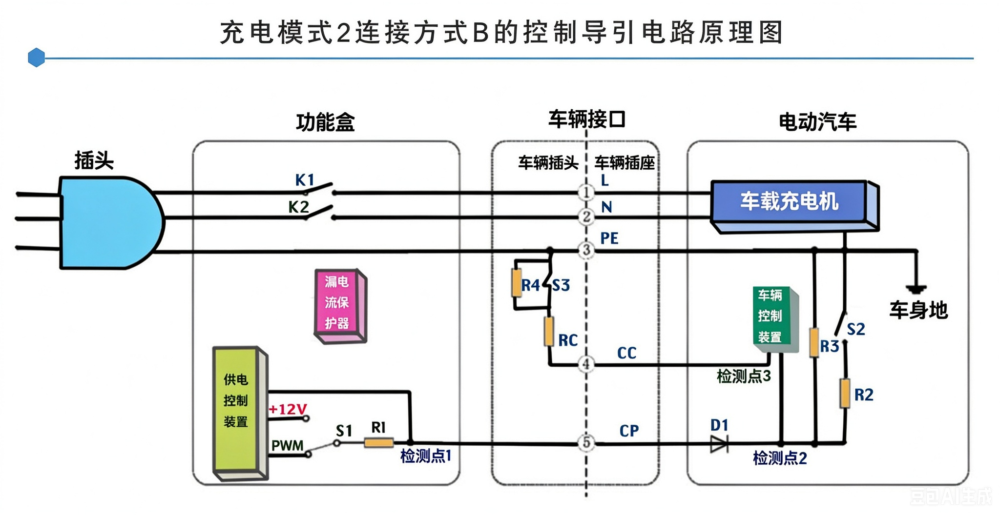

* 点击图片可全屏放大。观察 CP 信号从 12V → 9V → 6V 的跳变过程。
常见引导信号电压/电阻参考：
| 测量点 | 状态 | 正常值 / 判定 |
|---|---|---|
| 车端 CC ↔ PE 电阻 | 拔枪 | 约 1kΩ |
| 车端 CP ↔ PE 电压 | 拔枪 | 12V |
| 车端 CP ↔ PE 电压 | 插枪(未充电) | 9V 左右 |
| 车端 CP ↔ PE 电压 | 插枪(已握手) | 6V 左右 |
⚠️ 注意：如果锁枪机构损坏，CC 回路无法接通，车辆将不认枪。部分车型充电口电子锁在 12V 断电时无法拔出，需拉应急拉线。
很多交流充不进电，最终查出来是 OBC 内部 PFC 电路损坏或 DCDC 模块击穿。厂家通常只换不修，但其实有维修降本方案。
想学习 OBC 内部板级维修与高压系统逻辑？
保存二维码，加微信获取深度课程大纲